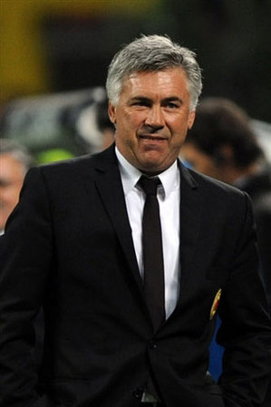

卡尔洛·安切洛蒂

卡尔洛·安切洛蒂（Carlo Ancelotti，1959.6.10-），意大利著名足球运动员、教练员。球员时代曾是罗马和AC米兰的主力中场，米兰梦之队时期的代表人物之一，赢得过俱乐部层面的所有荣誉。参加过1986年、1990年世界杯及1988年欧洲杯，夺得世界杯第三名和欧洲杯第四名，荷兰三剑客、保罗马尔蒂尼和罗伯特巴乔都曾是他的队友。退役后辅佐萨基成为意大利队助教，并于1994年夺得世界杯亚军。
九十年代中期开始先后执教雷吉纳足球俱乐部、帕尔马足球俱乐部，夺得过意大利杯赛冠军和欧洲联盟杯冠军等殊荣，培养出贝隆、克雷斯波、布冯、卡纳瓦罗等巨星。
从2001-2002赛季出任AC米兰主帅开始算起，安切洛蒂执掌AC米兰权杖长达七个半赛季之久，执教场次之多、战绩之彪炳，即使在AC米兰百年的历史上，也仅有传奇教练罗科可与之比肩。尤其是2003年至2007年的五年间，安切洛蒂率领米兰三进欧冠决赛两度捧杯，开创了米兰自“荷兰三剑客”之后又一个辉煌时代，史称安切洛蒂第二王朝。
2009年成为切尔西主帅，·2011年5月23日，切尔西官方发表声明宣布安切洛蒂下课。
2011年12月30日，安切洛蒂开始执教巴黎圣日耳曼足球俱乐部，取得1个法甲冠军。
2013年6月25日，皇家马德里俱乐部官网宣布安切洛蒂正式担任主教练，合同为期三年。
2014年4月17日，率皇马夺得队史第19座国王杯，5月25日率皇马夺得队史第10次欧冠。
2014年12月21日，率皇马22连胜，创造了连胜新的纪录。
2014年12月21日，率皇马夺得2014年世俱杯冠军。